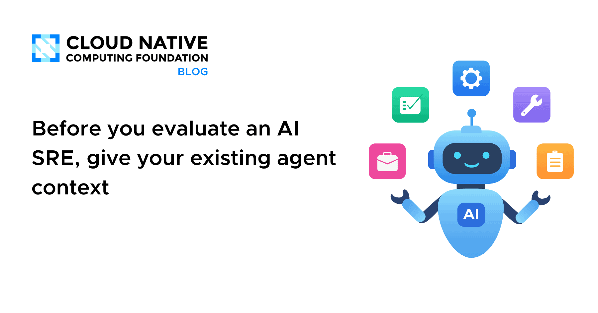
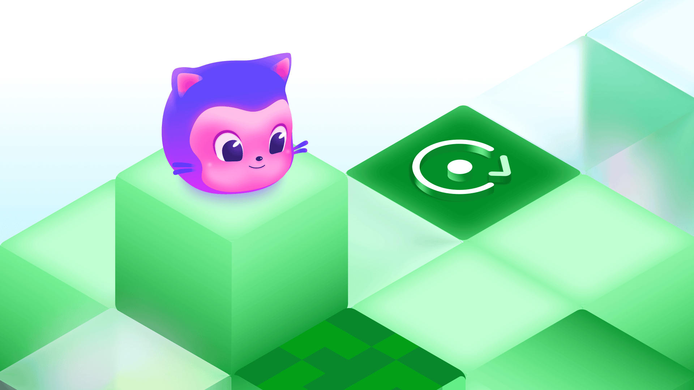
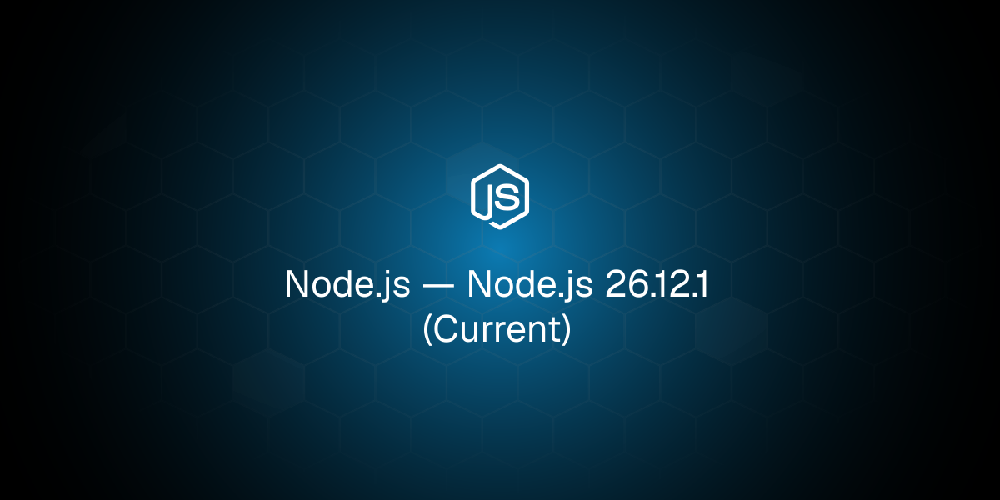
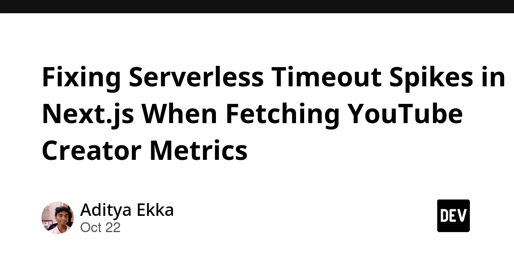
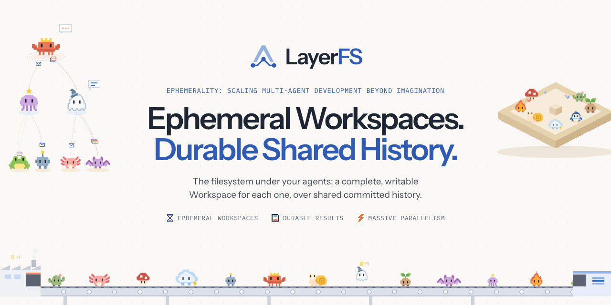
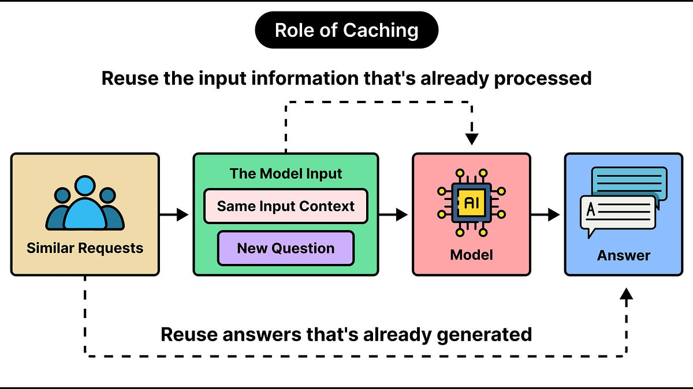
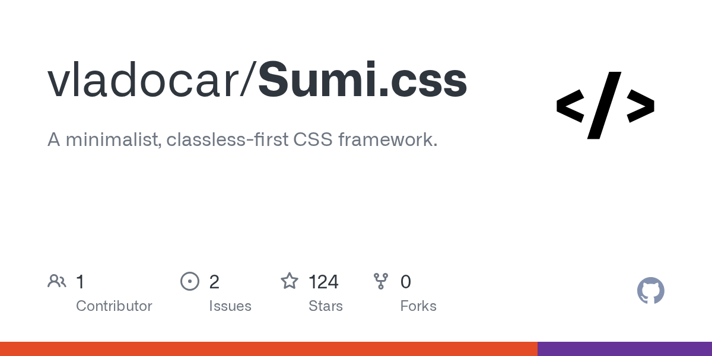
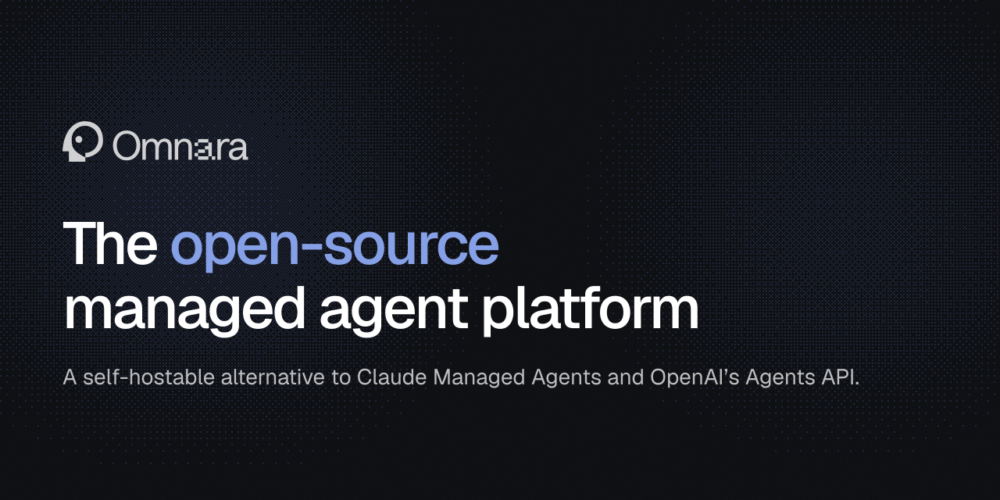

🔥 Top 3 (must read)
Before you evaluate an AI SRE, give your existing agent context
The coding agent your team already uses (Claude Code, Codex, Cursor) can already look into a Kubernetes cluster. What it is missing is context: runbooks, cluster layout, and how to reach your tools. The post says to add that first, before you pay for an "AI SRE" product. Why it matters: This is a cheap, practical step for a team that already pays for coding agents and runs on Kubernetes.

The bridge to agent-scale Git infrastructure
GitHub moved a copy of almost all repositories to Azure. The post explains per-reference quorums for writes and object storage so reads can scale on their own. Why it matters: A real system design case study on storage, consistency, and scaling reads apart from writes. Agents also push far more Git traffic than humans, which changes the load shape.

Using Claude to reduce the attack surface of code
Anthropic shows how Claude can find and shrink the parts of a codebase that an attacker could reach. It is an example of using an agent for security work, not only for writing features. Why it matters: A concrete pattern for a team that wants to use Claude Code for more than feature work, for example a scheduled security pass over the repo.

🛠 Tools & releases
26.12.1 (Current)
Node.js releases on all lines: , 24.22.1 (LTS), 22.23.4 (LTS). All three lines shipped on the same day, so check the notes for the line you run.

PHP security release
: two remote code execution holes across all of PHP 8.x. Exploits are already out after a leak in the disclosure process. If any team service still runs PHP, update today.
S
Fixing serverless timeout spikes in Next.js
: a Vercel cron job that did
Promise.all over 50+ external API calls kept hitting the 25-second limit. A short write-up of how they fixed it.
🤖 AI for developers
LayerFS: the filesystem for AI coding agents
(HN discussion, 70 points, 42 comments): a layered filesystem built for coding agents, so changes can be isolated and rolled back. The comments are worth a look for the trade-offs.

LLM prompt caching versus semantic caching
: how the two caching types work, and when each one saves money or time in an LLM-backed app.

👔 Engineering & teams
Before you evaluate an AI SRE, give your existing agent context
: a good "buy vs. use what you have" framing for an EM who gets vendor pitches for AI on-call tools.
The bridge to agent-scale Git infrastructure
: how GitHub runs a large storage migration while staying up.
🎯 For me
CNCF post
AI on-call: the maps directly to a team that already uses Claude Code and runs Kubernetes.
timeout spikes post
Next.js / serverless: the is a small but real lesson for any Node cron job that fans out to a slow third-party API.
LayerFS
Agent sandboxes: is relevant if you let agents run with write access to repos.
💡 App ideas & indie builds
Sumi.css
(HN, 76 points): a small CSS framework. The user problem is simple: devs want a clean default look without pulling in a big framework. Inspiration: a tiny, well-named tool can get attention if it does one thing well.

Omnara
(HN, 27 points): open-source alternative to Claude Managed Agents. The problem: teams want to run and watch long-running coding agents but do not want to be locked to one vendor's hosted service. Inspiration: "open-source version of a hosted AI feature" is a repeatable idea pattern.

🎓 Try this
Follow the CNCF post: give Claude Code read-only cluster access plus your runbooks and service map in a CLAUDE.md, then ask it to investigate a recent incident. Compare the result with what an AI SRE vendor demo shows before you spend money.